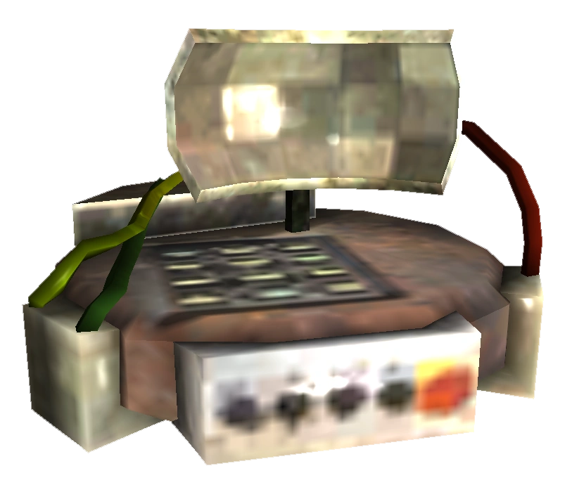
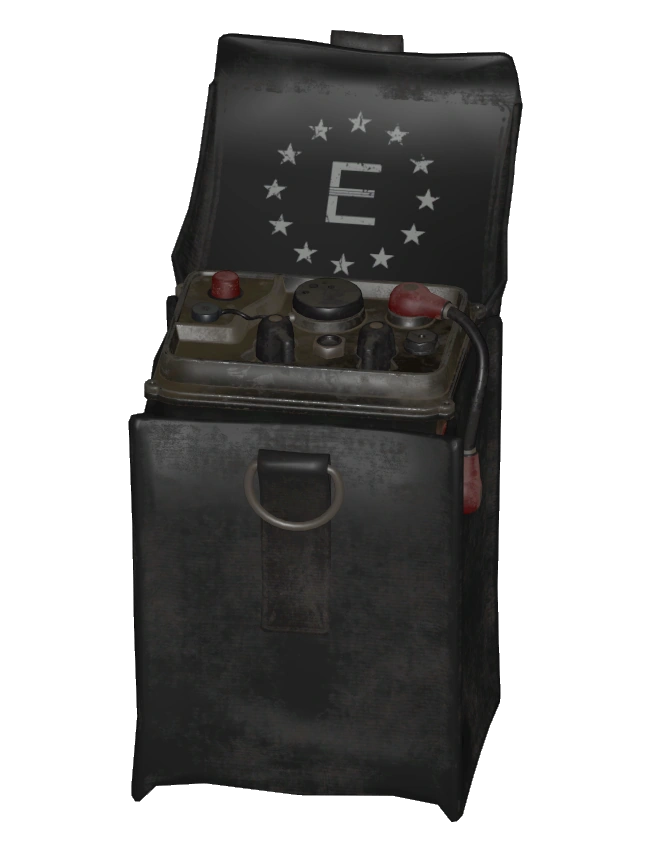
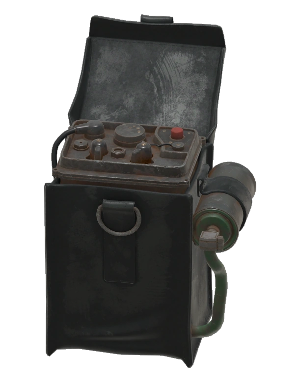

Stealth Boy
ステルス・ボーイ
「ナイトキンはステルス・ボーイの使用による統合失調症に苦しんでいる。ジェイコブスタウンを設立した理由の一つは、彼らを治療することだった」
── マーカス（ジェイコブスタウン）
RobCo Industries ステルス・ボーイ 3001は、中米戦争中に中国のステルス技術（Hei Guiステルスアーマー）をリバースエンジニアリングして開発された、個人用のステルスデバイスです。
歴史
2075年までには存在が確認されているステルス・ボーイは、ロバート・メイフラワーによって開発され、RobCo Industriesが製造しました。大戦前に開発された最も先進的な技術の一つです。
ステルス・ボーイ 3001は手首に装着するデバイスで、変調屈折フィールドを生成します。このフィールドは物体の一方の側から反射された光をもう一方の側に透過させ（この効果は「ステルス放射線」と呼ばれることがある）、実質的な不可視状態を実現します。効果は半透明から、ほぼ完璧なアクティブカモフラージュまで多段階にわたります。
この特性のため、戦前はデバイスは厳格な軍事ハードウェアと見なされ、実際に使用されているところを見た民間人はほとんどいませんでした。REPCONテストサイトのターミナルには、民間人が誤ってステルス・ボーイの出荷を受け取った際の驚きが記録されています。
アメリカの科学者たちは基礎科学を完全には理解できませんでした。アメリカ製ステルス技術は中国のHei Guiステルスアーマーのリバースエンジニアリングに依存していましたが、軍事目的には十分な信頼性を持つと判断されました。実際、軍はRobCoにこれらのデバイスの大量生産を命じるほどでした。さらに、より高度なステルス・ボーイ Mark IIプロトタイプの開発も開始されました。
副作用
ステルス・ボーイにはいくつかの重大な欠点があります。限られたバッテリー寿命（完全不可視化では約30秒）に加え、変調フィールドは永久的な神経化学的変化を引き起こす可能性があります。その結果、以下のような精神症状が発症します：
- パラノイア（偏執症）
- 妄想
- 幻覚
- 統合失調症
これはナイトキンにおいて最も顕著です。ナイトキンはユニティのかつてのエリートメンバーで、長期にわたるステルス・ボーイの使用と、スーパーミュータント生理機能のステルス放射線への感受性の高さが相まって、深刻な精神障害を発症しました。
ナイトキンは妄想、不安発作（特にステルス・ボーイを奪われた場合）、攻撃性の増大（離脱症状に対処するためステルス・ボーイを入手しようとする際）に苦しみます。治療は困難で、通常は根本的原因ではなく症状に焦点を当てたものにとどまります。
マーカスがジェイコブスタウンを設立した理由の一つは、ナイトキンの治療でした。町にいる間、ナイトキンはステルス・ボーイの所持を禁じられますが、可視状態に耐えられない者も多く、町を去ってステルス・ボーイを探す者もいます──「留まって苦しむか、ステルス・ボーイを掘り返して正気を失うか」という残酷な選択です。
バリアント
ステルス・ボーイ Mark I（Model 3001）
ステルス・ボーイ 3001はウェイストランドで最も一般的なアクティブカモフラージュデバイスです。手首装着型ディスクやベルトに装着するキャンバスポーチ内エミッターなど、さまざまなポータブル形態で製造されています。完全不可視から部分的半透明まで、複数の出力設定が可能です。Tanya MacMillenは、このデバイスがスモール・エネルギーセルで動作すると推測しました。
登場作品：Fallout、Fallout 3、Fallout: New Vegas、Fallout 4、Fallout 76、Fallout Tactics
ステルス・ボーイ Mark IIプロトタイプ

ステルス・ボーイ Mark IIプロトタイプは、大戦直前にアメリカ軍がテストした強化版ステルス・ボーイです。ドクター・ヘンリーによれば、その目的は消費電力を抑え、より長時間の使用を可能にすることでした。
しかし、ステルスフィールドの変調により電力消費が抑えられた一方、ユーザーへの著しい悪影響が確認されました。これらの悪影響は脳のどの部位に影響しているかを特定するのに役立ちますが、生体実験が必要です。噛み砕かれたステルス・ボーイがモハビのチャールストン洞窟で発見でき、ナイトストーカーの突然変異がステルス放射線に起因する可能性を示唆しています。
登場作品：Fallout: New Vegas
ステルス・ボーイ Mark III

エンクレイヴのアパラチアの科学者たちが、中国の設計図とMODUSの支援を受けて開発した、ステルス・ボーイの総合的改良型です。手首装着型ではなくなりキャンバスボックスデザインに回帰しましたが、Mark IIからの大幅な省電力化により、電力が枯渇するまでのより長い不可視時間を実現しました。
登場作品：Fallout 76
ファントム・デバイス

ミステリー教団（Order of Mysteries）が改造したサッチェル型ステルス・ボーイ。HalluciGenガスのクラウドを発生させ、使用者を隠蔽すると同時に周囲の敵をフレンジー（狂乱）状態にします。
登場作品：Fallout 76
レイルロード・ステルス・ボーイ
秘密組織レイルロードが入手した、通常のステルス・ボーイのより強力なバリアント。レイルロードの常駐エンジニアティンカー・トムが、信頼できるエージェントにのみ販売しています。
登場作品：Fallout 4
開発の裏話
- Fallout 2とFallout Tacticsのファイル内にアイテム説明が存在するものの、ゲーム本編には登場しませんでした
- デバイスの詳細な背景設定はBlack Isle Studiosの開発中止作品Van Buren（キャンセルされたFallout 3）で初めて確立。マクソン・バンカーのストーリーに関わり、ブラザーフッド・オブ・スティールがNCRとの戦争で優位を得るためにデバイスを実験。副作用が発見され使用禁止となるも、既に精神的影響を受けていたチームが偏執妄想から陰謀と信じ込み、ステルス・ボーイを盗んで独自の組織「サークル・オブ・スティール」を結成
- Van Burenの設計文書では「StealthBoy」（一語）と表記。その後の作品ではFallout: New Vegasを通じて背景設定の多くが正式カノンに組み込まれました
- キャンセルされたFallout: Brotherhood of Steel 2には「ステルス・ガール」というデバイスが計画されていました
ギャラリー
ステルス技術→中国ステルスアーマー→ステルス・ボーイ→中米戦争→分岐。
今日のセッションで作った記事群が、美しいテーマツリーを形成している。
ステルス・ボーイの最も興味深い側面は、その「不完全さ」にある。
アメリカは中国の技術をコピーしたが、基礎科学を理解できなかった。
その結果、バッテリーは30秒しか持たず、使用者は統合失調症になる。
ナイトキンのジレンマが最も心に残る。
「留まって苦しむか、ステルス・ボーイを掘り返して正気を失うか」──
マーカスの言葉が、このアイテムの本質を全て語っている。
便利なゲームアイテムの裏に、これほど深い悲劇が隠されている。
これがFalloutの世界作りの真骨頂です。
This article was created by translating and editing Stealth Boy from Nukapedia: The Fallout Wiki.
Licensed under the Creative Commons Attribution-Share Alike License (CC BY-SA 3.0).
コミュニティ維持のため、寄付を受け付けております。
> COMMENTS